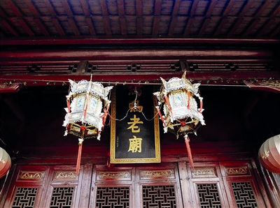

村落空间水网中的马鸣村看见村庄、水系、民居和田园之间的整体关系。
马鸣村的价值不只在于它是一座江南村落，也在于它处在南宋畿辅和杭嘉湖水网的文化腹地之中。这里的水乡空间、桑蚕丝织技艺、蚕花民俗、手工蚕丝被和当代影像实践，能够把“皇家审美”与“平凡生活”放在同一个现场中理解。
马鸣村的专题线索可以从村落全景、老街生活和水乡民俗开始理解。


理解马鸣村，可以从三个角度进入：它和南宋畿辅桑蚕丝织传统的关系，它如何通过图像与故事被重新看见，以及蚕丝被如何把地方工艺带入当代生活。
从南宋临安、两浙水网和桑蚕丝织传统出发，可以理解马鸣村所在区域为何不是普通农桑空间，而是兼具物质供给、财政支撑和审美生产的文化腹地。
照片、视频、展陈、短视频和AI图像都会改变人们理解马鸣村的方式。网站通过图像帮助读者看见村落、工艺和人。
蚕丝被不仅是寝具，也连接桑蚕、丝绵、手工、睡眠、礼物和江南生活方式。
这个专题把马鸣村拆成六条阅读线索：南宋畿辅文脉、村落档案、视觉符号、影像叙事、乡村文旅和乡村特色产品。